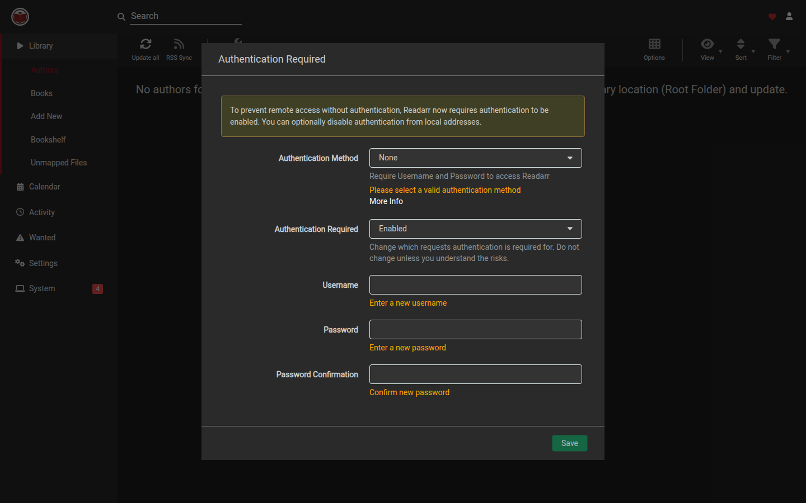

Readarr
Readarr
Start here
The default HTTP port is 8787. Some deployments map a second instance to another port (this capture used 8788). Open the URL in a browser.
First start: Authentication Required
On a new instance the library loads, then a modal titled Authentication Required blocks the rest of the UI until you save a method.

- Read the warning: “To prevent remote access without authentication, Readarr now requires authentication to be enabled. You can optionally disable authentication from local addresses.”
- Set Authentication Method to something other than None. With None selected the form shows Please select a valid authentication method.
- Leave Authentication Required as Enabled unless you understand the risk stated on the form: “Change which requests authentication is required for. Do not change unless you understand the risks.”
- Enter Username, Password, and Password Confirmation.
- Choose Save.
After that, later visits use the login page.
Then finish setup
- Confirm the metadata URL: open Settings (the hub page), then Development. Leave Metadata Source blank for rreading-glasses. See Metadata source.
- Add a root folder under Settings → Media Management (fieldset Root Folders).
- Review Settings → Profiles. Default cards on a fresh instance are eBook (MOBI, EPUB, AZW3) and Spoken. Set Wanted Formats if you want independent ebook, PDF, and audiobook copies. See Wanted formats.
- Add indexers and download clients from the Settings hub.
- Add authors from Library → Add New.
Build from source
On a development machine with the .NET 10 SDK:
export PATH="$HOME/.dotnet:$PATH"
dotnet build src/Readarr.sln -c ReleaseThe default git branch is develop.